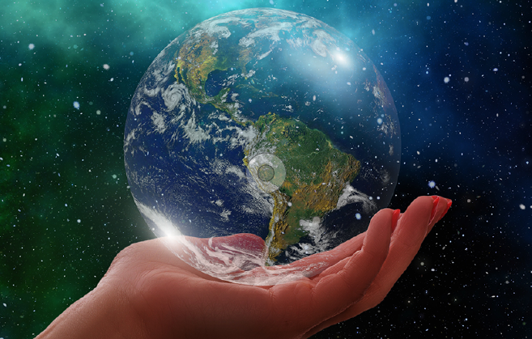

8 atitudes que podem salvar o planeta
- Economize água!
- Economize energia.
- Sempre faça o descarte correto do lixo.
- Recicle seu lixo.
- Preserve a vegetação nativa e os cursos d'água.
- Utilize veículo apenas quando necessário.
- Evite o consumismo.
- Sempre que possível, opte por alimentos orgânicos.

São ações simples que podemos fazer ao longo do nosso cotidiano.